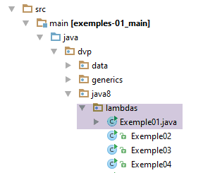
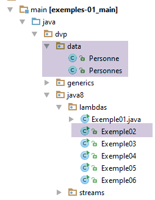
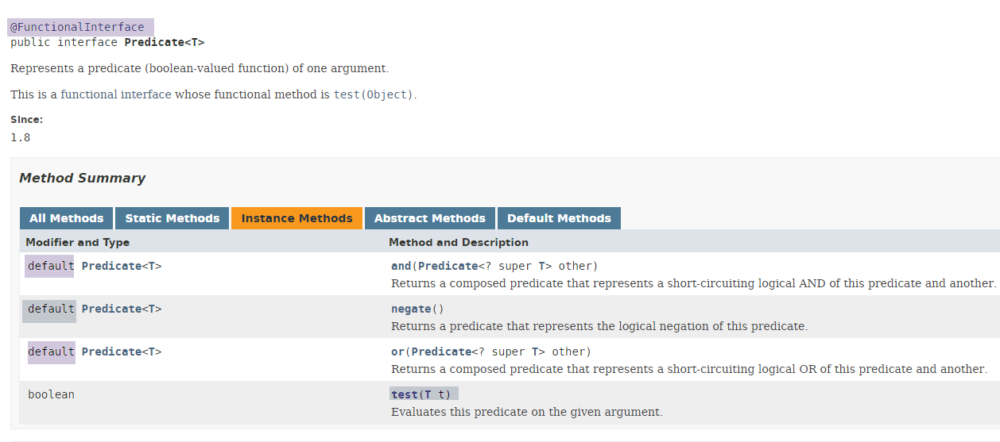
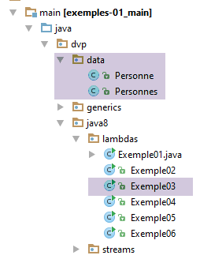
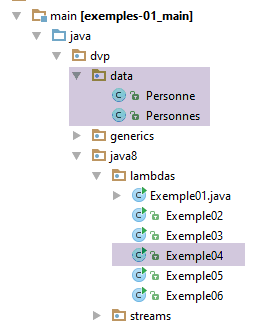
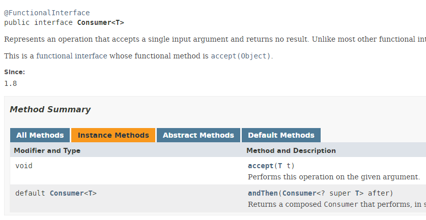
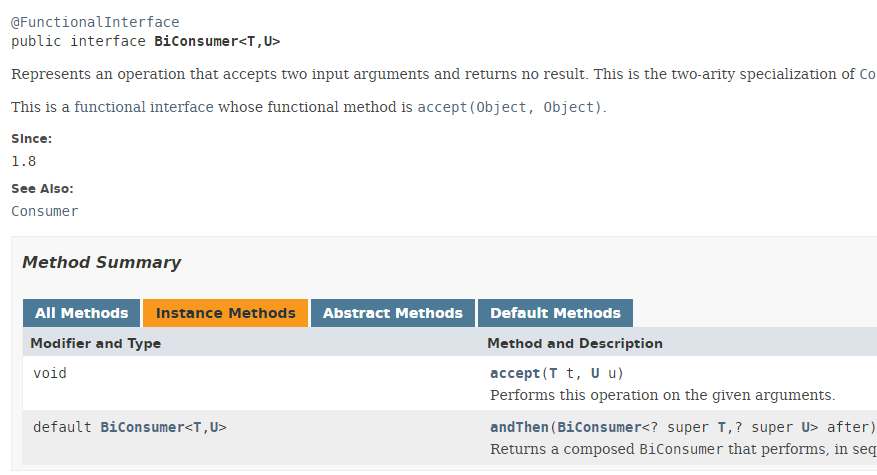
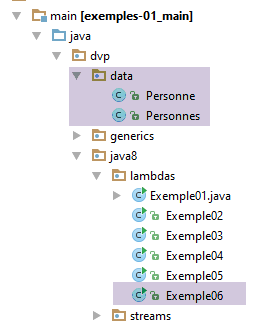
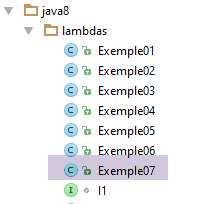

4. Lambda-Funktionen in Java 8
4.1. Beispiel-01 – Funktionale Schnittstellen und Lambdas
 |
Betrachten wir den folgenden Code:
package dvp.java8.lambdas;
public class Exemple01 {
public static void main(String[] args) {
// Anonyme Klassen
I1 ia1 = new I1() {
@Override
public void doSomething() {
System.out.println("ia1.doSomething");
}
};
I2 ia2 = new I2() {
@Override
public String getSomething(double value) {
return String.format("ia2.getSomething(%s)", value);
}
};
// Lambdas
I1 ib1 = () -> System.out.println("ib1.lambda");
I2 ib2 = (value) -> String.format("ib2.lambda(%s)", value);
I1 ib3 = () -> {
System.out.println("ib3.lambda");
};
I2 ib4 = (double value) -> {
return String.format("ib4.lambda(%s)", value);
};
// App
ia1.doSomething();
System.out.println(ia2.getSomething(4.3));
ib1.doSomething();
System.out.println(ib2.getSomething(5.8));
ib3.doSomething();
System.out.println(ib4.getSomething(10.1));
}
}
@FunctionalInterface
interface I1 {
void doSomething();
}
@FunctionalInterface
interface I2 {
String getSomething(double value);
}
- Zeilen 41–44: Definieren eine funktionale Schnittstelle I1. Eine funktionale Schnittstelle ist eine Schnittstelle, die nur eine Methode enthält. Sie ist nicht an das Vorhandensein der Annotation [@FunctionalInterface] in Zeile 41 gebunden, die optional ist;
- Zeilen 46–49: eine zweite funktionale Schnittstelle I2;
- Zeilen 6–19: Die Schnittstellen I1 und I2 werden mit anonymen Klassen implementiert – die gängigste Lösung vor der Einführung von Lambda-Funktionen;
- Zeilen 21–29: Die Schnittstellen I1 und I2 werden mit Lambda-Funktionen implementiert;
- Zeilen 7–12: Implementierung der Schnittstelle I1 mit einer anonymen Klasse. Die Syntax zur Implementierung einer Schnittstelle I mit einer anonymen Klasse lautet wie folgt:
wobei m1, m2, ... die durch die Schnittstelle I definierten Methoden sind.
- Zeilen 14–19: Implementierung der Schnittstelle I2 mit einer anonymen Klasse;
- Zeile 22: Implementierung der Schnittstelle I1 mit einer Lambda-Funktion. Hier wird die Tatsache genutzt, dass die funktionale Schnittstelle nur eine Methode hat. Die Lambda-Funktion implementiert dann diese einzige Methode M. Ihre Syntax lautet wie folgt:
Die Typen T1, T2 und Tn können weggelassen werden, wenn der Compiler sie aus dem Kontext ableiten kann (Typinferenz).
- Zeile 22: Implementierung der Methode [I1.doSomething] mit folgender Signatur:
void doSomething();
[doSomething] ist eine Methode ohne Parameter, die keinen Rückgabewert liefert. Ihre Lambda-Implementierung kann wie in Zeile 22 oder wie in den Zeilen 24–26 geschrieben werden, d. h., man kann den Code der Lambda-Funktion in geschweifte Klammern setzen. Wenn dieser Code wie hier nur eine Anweisung enthält, können diese geschweiften Klammern weggelassen werden;
- Zeile 23: Implementierung der Methode [I1.getSomething] mit folgender Signatur:
String getSomething(double value);
[getSomething] akzeptiert einen Parameter vom Typ [double] und gibt ein Ergebnis vom Typ [String] zurück. Ihre Lambda-Implementierung kann die in Zeile 23 oder die in den Zeilen 27–29 sein. In der Implementierung in Zeile 23:
- wird der Typ des Parameters [value] weggelassen. In diesem Fall wird der Typ [double] verwendet, der in der Signatur von [getSomething] zu finden ist;
- Der Lambda-Code ist nicht in Klammern gesetzt. Das Ergebnis des Lambda-Ausdrucks ist dann der Wert des einzigen Ausdrucks in diesem Code, hier: String.format("ib2.lambda(%s)", value);
In der Implementierung in den Zeilen 27–29:
- wird der Typ des Parameters [value] explizit deklariert;
- Zur Ausgabe des Ergebnisses des Lambda-Ausdrucks wird ein [return] verwendet. In diesem Fall müssen geschweifte Klammern gesetzt werden;
- Zeilen 32–37: Hier werden die verschiedenen anonymen Funktionen und Lambda-Ausdrücke aufgerufen;
Das Ergebnis sieht wie folgt aus:
4.2. Beispiel-02 – Die funktionale Schnittstelle Predicate<T>
 |
Meistens haben wir es mit funktionalen Schnittstellen aus Bibliotheken zu tun und nicht mit funktionalen Schnittstellen, die wir selbst definieren. Hier befassen wir uns mit der funktionalen Schnittstelle [Predicate], die im Paket [java.util.function] definiert ist, welches die meisten funktionalen Schnittstellen von Java 8 enthält. Diese ist wie folgt definiert:

Wir haben gesagt, dass eine funktionale Schnittstelle nur eine Methode hat. Hier gibt es jedoch vier. Eine weitere Neuerung in Java 8 war die Einführung des Konzepts der Standardmethode einer Schnittstelle, gekennzeichnet durch das Schlüsselwort [default]. Wir haben hier drei solcher Methoden. Diese Methoden zeichnen sich dadurch aus, dass sie eine Standardimplementierung haben. Eine Klasse, die eine Schnittstelle mit Standardmethoden implementiert, ist daher nicht verpflichtet, diese Methoden zu implementieren. Somit muss eine Klasse, die die Schnittstelle [Predicate] implementieren möchte, nur eine Methode zwingend implementieren: die Methode [test]. Die Schnittstelle [Predicate] ist somit tatsächlich eine funktionale Schnittstelle. Man sagt daher, dass eine funktionale Schnittstelle eine Schnittstelle ist, deren Implementierung nur eine obligatorische Methode enthält. Wenn sie mehr als eine Methode hat, müssen die anderen das Schlüsselwort [default] tragen.
Die Methode [Predicate<T>.test] nimmt einen Parameter vom Typ T entgegen und gibt einen booleschen Wert zurück. Diese Schnittstelle wird im Allgemeinen zum Filtern von Sammlungen verwendet. Um ihre Verwendung zu veranschaulichen, verwenden wir die folgenden Daten:
package dvp.data;
import com.fasterxml.jackson.core.JsonProcessingException;
import com.fasterxml.jackson.databind.ObjectMapper;
public class Personne {
public enum Sexe {HOMME,FEMME};
// Daten
private String nom;
private int age;
private double poids;
private Sexe sexe;
// Konstruktoren
public Personne() {
}
public Personne(String nom, Sexe sexe, int age, double poids) {
this.nom = nom;
this.sexe=sexe;
this.age = age;
this.poids = poids;
}
// Getter und Setter
...
// toString
@Override
public String toString(){
try {
return new ObjectMapper().writeValueAsString(this);
} catch (JsonProcessingException e) {
return e.getMessage();
}
}
}
- Zeilen 32–38: Die Methode [toString] gibt die Zeichenkette jSON der Person zurück;
Die Klasse [Personnes] definiert eine Liste mit 3 Personen:
package dvp.data;
import com.fasterxml.jackson.core.JsonProcessingException;
import com.fasterxml.jackson.databind.ObjectMapper;
import java.util.Arrays;
import java.util.List;
public class Personnes {
private static List<Personne> personnes = Arrays.asList(new Personne("jean", Personne.Sexe.HOMME, 20, 70),
new Personne("marie", Personne.Sexe.FEMME, 10, 30), new Personne("camille", Personne.Sexe.FEMME, 30, 55));
public static List<Personne> get() {
return personnes;
}
public static String toString(List<Personne> liste) {
try {
return new ObjectMapper().writeValueAsString(liste);
} catch (JsonProcessingException e) {
return e.getMessage();
}
}
}
- Zeilen 10–11: Die Liste mit 3 Personen;
- Zeilen 13–15: eine statische Methode, um diese Liste zu erhalten;
- Zeilen 17–23: eine statische Methode, mit der die Zeichenfolge jSON aus einer als Parameter übergebenen Liste von Personen abgerufen werden kann;
Diese Daten werden vom folgenden Code verarbeitet:
package dvp.java8.lambdas;
import java.util.ArrayList;
import java.util.List;
import java.util.function.Predicate;
import dvp.data.Personne;
import dvp.data.Personnes;
public class Exemple02 {
public static void main(String[] args) {
// Prädikat, implementiert durch eine anonyme Klasse
Predicate<Personne> filterPoids=new Predicate<Personne>() {
@Override
public boolean test(Personne personne) {
return personne.getPoids()<50;
}
};
// Prädikat, implementiert durch ein Lambda
Predicate<Personne> filterAge = p -> p.getAge() < 28;
// Personenliste
List<Personne> personnes = Personnes.get();
// Anzeigen
System.out.println(Personnes.toString(filterPersonnes(personnes, filterAge)));
System.out.println(Personnes.toString(filterPersonnes(personnes, filterPoids)));
}
private static List<Personne> filterPersonnes(List<Personne> personnes, Predicate<Personne> filter) {
// [filter] filtert die Liste [personnes]
List<Personne> personnesFiltrées = new ArrayList<>();
for (Personne p : personnes) {
if (filter.test(p)) {
personnesFiltrées.add(p);
}
}
return personnesFiltrées; }
}
- Zeilen 13–18: Implementierung der Schnittstelle `Predicate<Person>` durch eine anonyme Klasse. Es handelt sich um einen Filter für das Gewicht der Person;
- Zeile 20: Implementierung der Schnittstelle `Predicate<Personne>` durch eine Lambda-Funktion. Es handelt sich um einen Filter nach dem Alter der Person. Nach dem bisher Gesagten hätte sie auch wie folgt geschrieben werden können:
Predicate<Personne> filterAge = (Personne p) -> {
return (p.getAge() < 28);
};
aber die Version in Zeile 20 ist prägnanter. Der Typ des Parameters *p wird aus dem Kontext abgeleitet. Hier wird ein Typ [Predicate<Personne>] gebildet. Die implementierte Methode hat dann die Signatur [boolean test(Personne param)]. Der implizite Typ von p* in Zeile 20 ist also der Typ [Personne];
- Zeile 22: Es wird eine vordefinierte Liste von Personen abgerufen;
- Zeile 24: Diese werden nach ihrem Alter gefiltert;
- Zeile 25: Sie werden nach ihrem Gewicht gefiltert. In beiden Fällen wird die Zeichenfolge jSON aus der so gefilterten Liste angezeigt;
- Zeilen 28–37: Eine statische Methode, die
- als Parameter eine Liste der zu filternden Personen und den Filter akzeptiert. Dieser ist eine Instanz der Schnittstelle [Predicate<Personne>]. Im weiteren Sinne bezeichnen wir hier und an anderen Stellen im Dokument eine Instanz einer Schnittstelle I als eine Instanz einer Klasse C, die I implementiert;
- gibt als Ergebnis die so gefilterte Liste zurück;
- Zeile 32: Es wird die Methode [test] der Schnittstelle [Predicate] verwendet. Je nach dem an die Methode übergebenen Filter wird die Methode [test]:
return personne.getPoids()<50;
oder
return p.getAge() < 28
Die Ausführung der Klasse [Exemple02] liefert folgendes Ergebnis:
4.3. Beispiel-03 – die funktionale Schnittstelle Function<T,R>
 |
Die funktionale Schnittstelle Function<T,R> ist wie folgt definiert:

Die einzige Methode der Schnittstelle hat die Signatur R apply(T t). Sie wird im Allgemeinen verwendet, um aus einem Typ Collection<T> einen neuen Typ Collection<R> zu erstellen. Zur Veranschaulichung dieser Schnittstelle verwenden wir den folgenden Code:
package dvp.java8.lambdas;
import com.fasterxml.jackson.core.JsonProcessingException;
import com.fasterxml.jackson.databind.ObjectMapper;
import dvp.data.Personne;
import dvp.data.Personnes;
import java.util.ArrayList;
import java.util.List;
import java.util.function.Function;
public class Exemple03 {
public static void main(String[] args) throws JsonProcessingException {
// Implementierung mit anonymer Klasse
Function<Personne, String> mapToName = new Function<Personne, String>() {
@Override
public String apply(Personne personne) {
return personne.getNom();
}
};
// Implementierung mit Lambda
Function<Personne, Integer> mapToAge = p -> p.getAge();
// Personenliste
List<Personne> personnes = Personnes.get();
// jSON
ObjectMapper jsonMapper = new ObjectMapper();
// Anzeigen
System.out.println(jsonMapper.writeValueAsString(mapPersonnes(personnes, mapToName)));
System.out.println(jsonMapper.writeValueAsString(mapPersonnes(personnes, mapToAge)));
}
// Umwandlung von List<Person> in List<T>
private static <T> List<T> mapPersonnes(List<Personne> personnes, Function<Personne, T> mapper) {
List<T> maps = new ArrayList<>();
for (Personne p : personnes) {
maps.add(mapper.apply(p));
}
return maps;
}
}
- Zeilen 15–20: Die Schnittstelle [Function<Personne, String>] wird mit einer anonymen Klasse implementiert, die die Umwandlung von „Person“ in „String“ vornimmt;
- Zeile 22: Wir implementieren die Schnittstelle [Function<Personne, Integer>] mit einem Lambda-Ausdruck, der die Umwandlung von „Person“ in „Integer“ vornimmt;
- Zeilen 33–39: Eine statische Methode, die
- zwei Parameter akzeptiert: Der erste vom Typ List<Personne> ist eine Liste von Personen, die transformiert werden sollen. Der zweite vom Typ Function<Person, T> ist eine Funktion, die aus jeder Person der Liste ein Objekt vom Typ T erstellt;
- als Ergebnis einen Typ List<T> liefert, bei dem jedes Element aus der Umwandlung „Person“ -> „T“ stammt;
- Zeilen 35–37: Die Transformation „Person“ → „T“ wird angewendet. Ist der zweite Parameter der Methode das Objekt „[mapToName]“, wird eine Transformation „Person“ → „String“ durchgeführt. Handelt es sich um das Objekt [mapToAge], wird eine Transformation von „Person“ nach „Integer“ durchgeführt;
Das Ergebnis lautet wie folgt:
4.4. Beispiel-04 – Die funktionale Schnittstelle Consumer<T>
 |
Die funktionale Schnittstelle Consumer<T> ist wie folgt definiert:

Die einzige Methode der Schnittstelle hat die Signatur: void accept(T t). Diese Methode verarbeitet (verbraucht) ihren Parameter und gibt kein Ergebnis zurück. Zur Veranschaulichung verwenden wir den folgenden Code:
package dvp.java8.lambdas;
import java.util.List;
import java.util.function.Consumer;
import dvp.data.Personne;
import dvp.data.Personnes;
public class Exemple04 {
public static void main(String[] args) {
// Liste der Personen
List<Personne> personnes = Personnes.get();
// anonyme Implementierung
Consumer<Personne> consumerAge = new Consumer<Personne>() {
@Override
public void accept(Personne personne) {
System.out.printf(" age de %s = %s%n", personne.getNom(), personne.getAge());
}
};
// Lambda-Implementierung
Consumer<Personne> consumerPoids = p -> System.out.printf(" poids de %s = %s%n", p.getNom(), p.getPoids());
// Anzeigen
for (Personne p : personnes) {
consumerAge.accept(p);
}
System.out.println("--------");
for (Personne p : personnes) {
consumerPoids.accept(p);
}
}
}
- Zeilen 14–19: Die Schnittstelle [Consumer<Personne>] wird durch eine anonyme Klasse implementiert, deren Methode [accept] den Namen und das Alter der Person anzeigt;
- Zeile 21: Die Schnittstelle [Consumer<Personne>] wird durch eine Lambda-Funktion implementiert, deren implizite Methode [accept] den Namen und das Gewicht der Person anzeigt;
- Zeilen 23–25: Die Liste der Personen wird von der Implementierung [consumerAge] verwendet;
- Zeilen 27–29: Die Liste der Personen wird von der Implementierung [consumerPoids] verarbeitet;
Die Ergebnisse lauten wie folgt:
4.5. Beispiel-05 – die Funktionsschnittstelle BiConsumer<T,U>
 |
Die Funktionsschnittstelle BiConsumer<T,U> ist wie folgt definiert:

Die einzige Methode der Schnittstelle hat die Signatur: void accept(T t, U u). Sie nimmt den Typ T mit der Zusatzinformation U u entgegen. Wir veranschaulichen ihre Verwendung anhand des folgenden Codes:
package dvp.java8.lambdas;
import dvp.data.Personne;
import dvp.data.Personnes;
import java.util.List;
import java.util.function.BiConsumer;
public class Exemple05 {
public static void main(String[] args) {
// Personenliste
List<Personne> personnes = Personnes.get();
// anonyme Implementierung
BiConsumer<Personne, Integer> biconsumerAge = new BiConsumer<Personne, Integer>() {
@Override
public void accept(Personne personne, Integer integer) {
personne.setAge(personne.getAge() + integer);
System.out.printf("age de %s = %s%n", personne.getNom(), personne.getAge());
}
};
// Lambda-Implementierung
BiConsumer<Personne, Integer> biconsumerPoids = (p, i) -> {
p.setPoids(p.getPoids() + i);
System.out.printf("poids de %s = %s%n", p.getNom(), p.getPoids());
};
// Anzeigen
for (Personne p : personnes) {
biconsumerAge.accept(p, 100);
}
System.out.println("--------");
for (Personne p : personnes) {
biconsumerPoids.accept(p, 200);
}
}
}
- Zeilen 14–20: Implementierung der Schnittstelle BiConsumer<T,U> mit einer anonymen Klasse. Die Methode [apply] verwendet ihren zweiten Parameter, um das Alter der als ersten Parameter übergebenen Person zu aktualisieren. Anschließend gibt sie das Ergebnis aus;
- Zeilen 22–25: Implementierung der Schnittstelle BiConsumer<T,U> mit einer Lambda-Funktion. Die implizite Methode [apply] verwendet ihren zweiten Parameter, um das Gewicht der als ersten Parameter übergebenen Person zu aktualisieren. Anschließend gibt sie das Ergebnis aus;
- Zeilen 27–29: Die Liste der Personen wird mit der Implementierung [biconsumerAge] verarbeitet;
- Zeilen 31–33: Die Liste der Personen wird mit der Implementierung [biconsumerPoids] verarbeitet;
Die folgenden Ergebnisse werden erzielt:
4.6. Beispiel-06 – die Funktionsschnittstelle BiFunction<T,U,R>
 |
Die Funktionsschnittstelle BiFunction<T,U,R> ist wie folgt definiert:

Die einzige Methode der Schnittstelle hat die Signatur: R apply(T t, U u). Diese Methode ähnelt der Methode [BiConsumer.apply], doch während letztere kein Ergebnis zurückgibt, liefert die Methode [BiFunction.apply] ein Ergebnis. Wir veranschaulichen ihre Verwendung mit dem folgenden Code:
package dvp.java8.lambdas;
import java.util.List;
import java.util.function.BiFunction;
import dvp.data.Personne;
import dvp.data.Personnes;
public class Exemple06 {
public static void main(String[] args) {
// Personenliste
List<Personne> personnes = Personnes.get();
// anonyme Implementierung
BiFunction<Personne, Integer, Integer> biFunctionAge = new BiFunction<Personne, Integer, Integer>() {
@Override
public Integer apply(Personne personne, Integer integer) {
return personne.getAge() + integer;
}
};
// Lambda-Implementierung
BiFunction<Personne, Integer, Double> biFunctionPoids = (p, i) -> {
return p.getPoids() + i;
};
// Anzeigen
for (Personne p : personnes) {
System.out.printf("age de %s = %s%n", p.getNom(), biFunctionAge.apply(p, 100));
}
System.out.println("--------");
for (Personne p : personnes) {
System.out.printf("poids de %s = %s%n", p.getNom(), biFunctionPoids.apply(p, 200));
}
}
}
- Zeilen 14–19: Die Schnittstelle BiFunction<Person, Integer, Integer> wird mit einer anonymen Klasse implementiert. Die Methode [apply] dieser Klasse gibt das Alter der als ersten Parameter übergebenen Person zurück, erhöht um den Wert des zweiten Parameters;
- Zeilen 21–23: Die Schnittstelle BiFunction<Person, Integer, Double> wird mit einer Lambda-Funktion implementiert. Die Methode [apply] gibt das Gewicht der als ersten Parameter übergebenen Person zurück, erhöht um den Wert des zweiten Parameters;
- Zeilen 25–27: Die Implementierung [biFunctionAge] wird auf die Personen angewendet;
- Zeilen 29–31: Die Implementierung [biFunctionPoids] wird auf die Personen angewendet;
Die Ergebnisse lauten wie folgt:
age de jean = 120
age de marie = 110
age de camille = 130
--------
poids de jean = 270.0
poids de marie = 230.0
poids de camille = 255.0
Neben den Lambda-Funktionen wurde in Java 8 der Typ Stream<T> eingeführt, der einen Strom von Elementen des Typs T modelliert. Diese Elemente können aufeinanderfolgenden Transformationen unterzogen werden, die durch Lambda-Funktionen implementiert werden. Wenn dies möglich ist und mehrere Prozessoren zur Verfügung stehen, können diese Transformationen manchmal parallel ausgeführt werden.
4.7. Beispiel-07 – Die funktionale Schnittstelle Supplier<T>
 |
Die funktionale Schnittstelle Supplier**<T>** ist wie folgt definiert:

Die einzige Methode der Schnittstelle hat die Signatur: T get(), deren Aufgabe es ist, ein Objekt vom Typ T bereitzustellen.
Wir veranschaulichen diese funktionale Schnittstelle mit dem folgenden Code:
package dvp.java8.lambdas;
import java.util.List;
import java.util.Random;
import java.util.function.Supplier;
import dvp.data.Personne;
import dvp.data.Personnes;
public class Exemple07 {
public static void main(String[] args) {
// anonyme Implementierung
Supplier<Personne> supplier = new Supplier<Personne>() {
// Personenliste
List<Personne> personnes = Personnes.get();
// Schnittstellenimplementierung
@Override
public Personne get() {
int i = new Random().nextInt(personnes.size());
return personnes.get(i);
}
};
// Auswertung
for (int i = 0; i < 5; i++) {
affiche(supplier);
}
}
// Personenanzeige
public static void affiche(Supplier<Personne> supplier) {
System.out.println(supplier.get());
}
}
- Zeilen 13–28: Implementierung eines Typs Supplier<Personne>;
- Zeilen 31–33: Die statische Methode [affiche] erwartet einen Parameter vom Typ Supplier<Personne>;
- Zeilen 25–27: Ausführung der Instanz Supplier<Personne>;
Es werden folgende Ergebnisse erhalten: